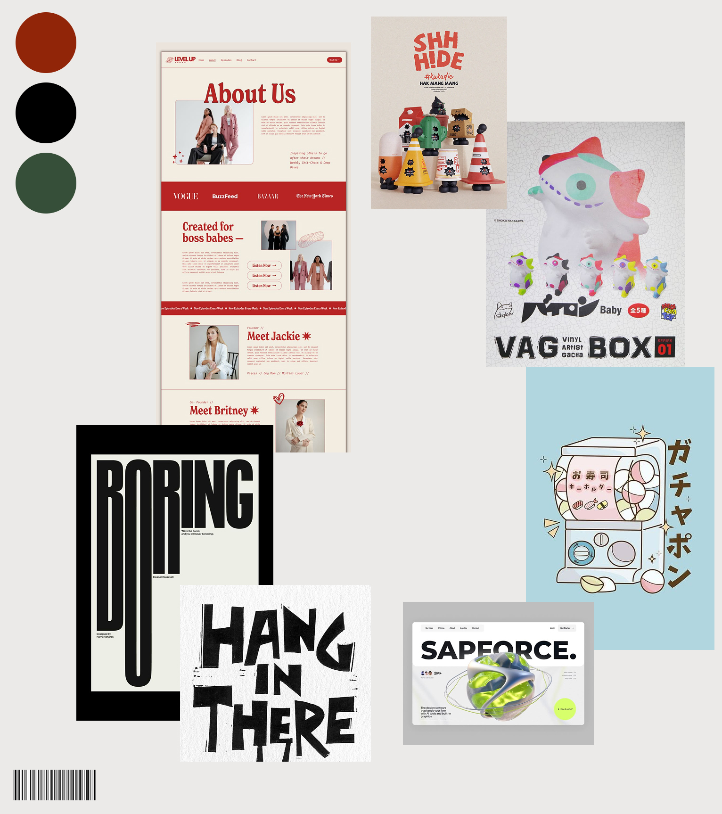
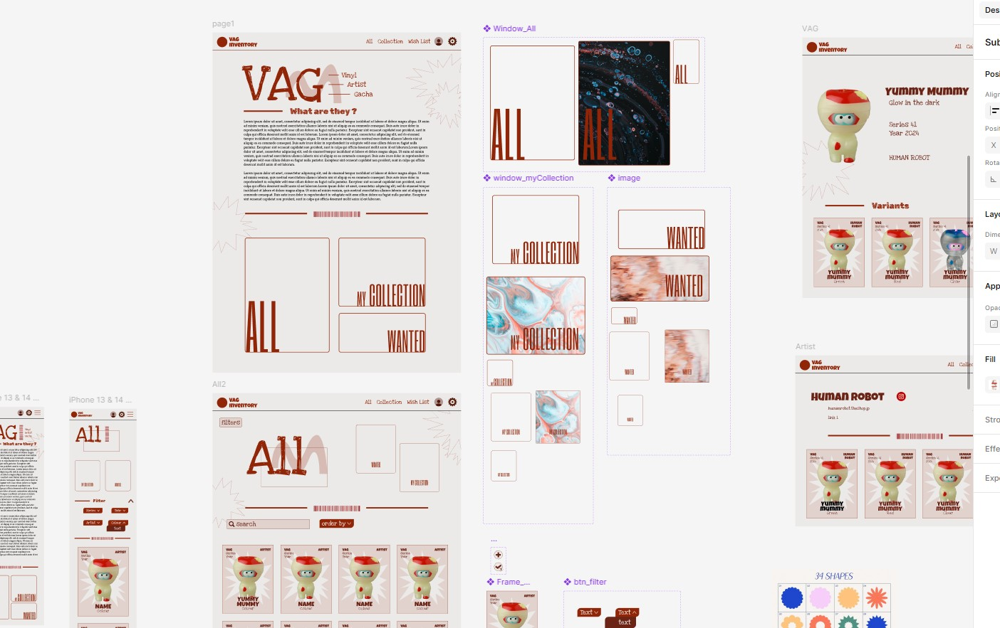
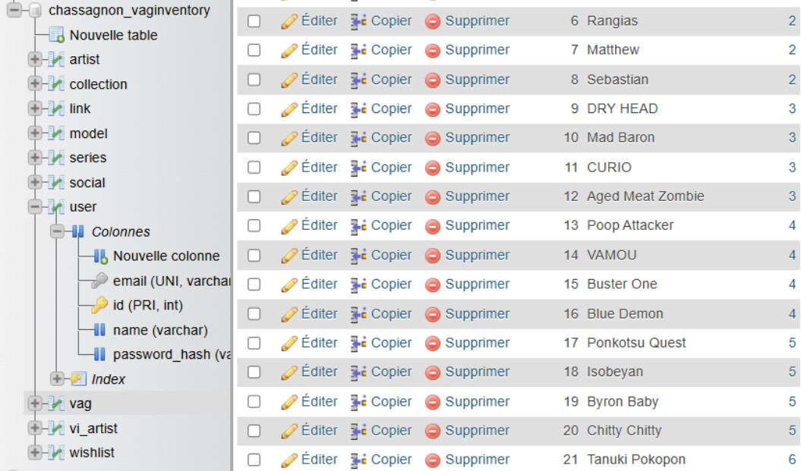
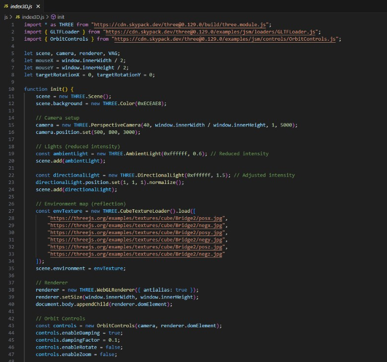

En 2025, dans le cadre d’un projet scolaire, nous avons dû réaliser, seuls, un site faisant l’inventaire d’objets de notre choix, ce en créant une base de données et des filtres de recherche. J’ai décidé de choisir des figurines nommées “VAG”.
Les Vinyl Artist Gacha, plus communément appelés V.A.G., sont des petits jouets en vinyle à collectionner produits par la société japonaise Medicom Toys.
Je devais créer un site complet seule en peu de temps ; cela comprennait le design, les éléments graphiques et la programmation. Une bonne répartition de mon temps était nécessaire ; j'ai décidé de prendre mon temps sur mon design pour gagner du temps sur le code, et de chercher à automatiser un maximum de choses.
Les VAG sont des figurines peu connues et qui ont donc peu d'informations, ce qui est un challenge pour trouver une identité claire du site.
J’ai commencé par créer un moodboard à l’aide de Figma et Pinterest.

Une fois cela fait, j’ai continué sur figma pour réaliser un design pour mon site. J’ai également décidé d’ajouter des fonctionnalités à mon site, telles que des sessions utilisateurs et une liste de souhaits.

Enfin, j’ai pû procéder au code de mon projet. J’ai alors dû apprendre de nombreuses choses, comme la réalisation et l’intégration d’un modèle 3D. J’ai également dû créer une base de données et récupérer les données nécessaires en PHP.

Enfin, une fois le site fonctionnel et plusieurs fonctionnalités nouvelles pour moi (ajouts de données dans la base, pagination, gestion de comptes) j’ai pu réaliser les derniers visuels : détourage de presque 1300 figurines, réalisation d’éléments graphiques sur Illustrator.
